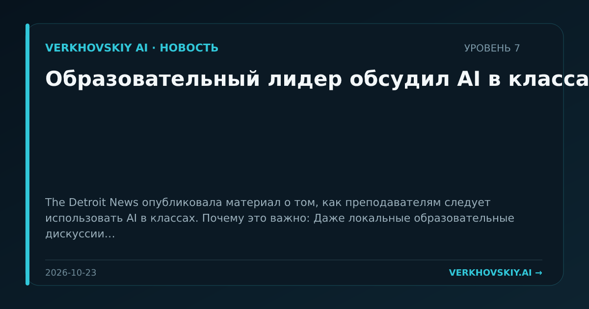

Образовательный лидер обсудил AI в классах
The Detroit News опубликовала материал о том, как преподавателям следует использовать AI в классах. Почему это важно: Даже локальные образовательные дискуссии важны как ранний слой нормализации AI-грамотности в школьной системе.